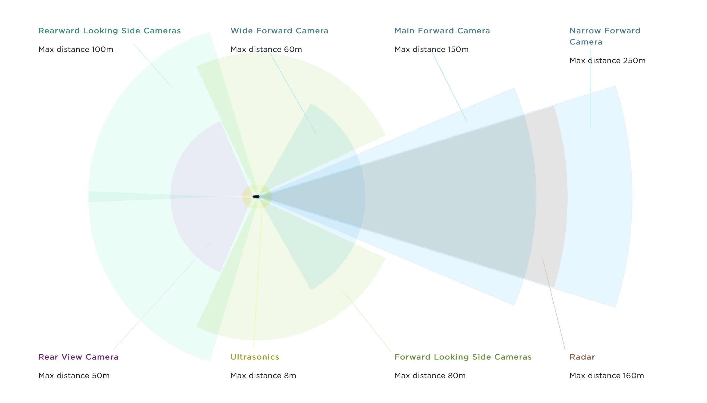
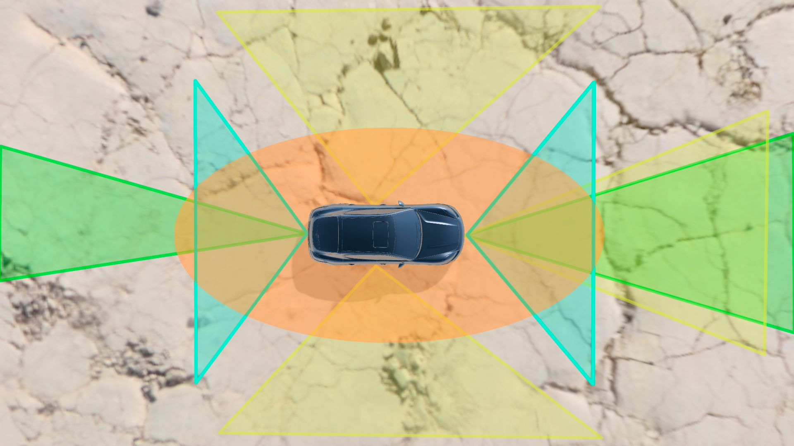

Проанализировав рынок, наша команда приняла решение взять за основу модель для локального позиционирования от Tesla.

Проанализировав их решение, мы убрали камеру переднего вида максимальная дальность, которой равна 250 метров, так как в условиях кластера не нужно анализировать ситуацию на дороге с такой дальностью. Также убрали 2 камеры заднего вида максимальной дальностью в 100 метров, из-за, того, что в зоне кластера нет участков высокой скорости, следовательно, скорость сближения будет меньше и автопилот успеет сманеврировать и при меньшем расстоянии, но при этом добавили радар, чтобы избежать столкновения в нештатных ситуациях.

Как итог, наша модель представляет из себя систему с датчиками, включающую в себя: